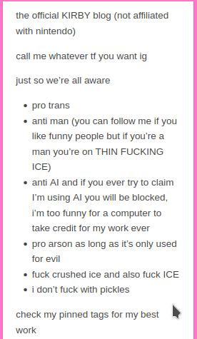

Unofficial Kirby update - FBI Themed
pronounce: butterbinary no csi non fbi liquid nano synthetic with an extra chromosome; gender: unidentified; sex: maybe;

Solution. in a struggle to understand either person regrets gender and about to change or person is about to hate self after changing gender i found out a following - it's a girls only party where life form offers you to switch to a desired gender in order to participate in girls only group party. However this is a lot not trusted offer to recive due to unable to check the guarantee